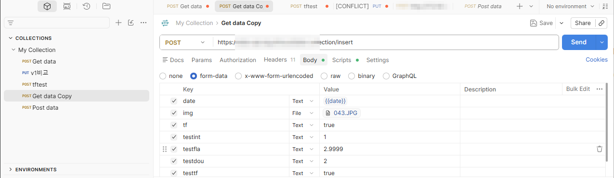
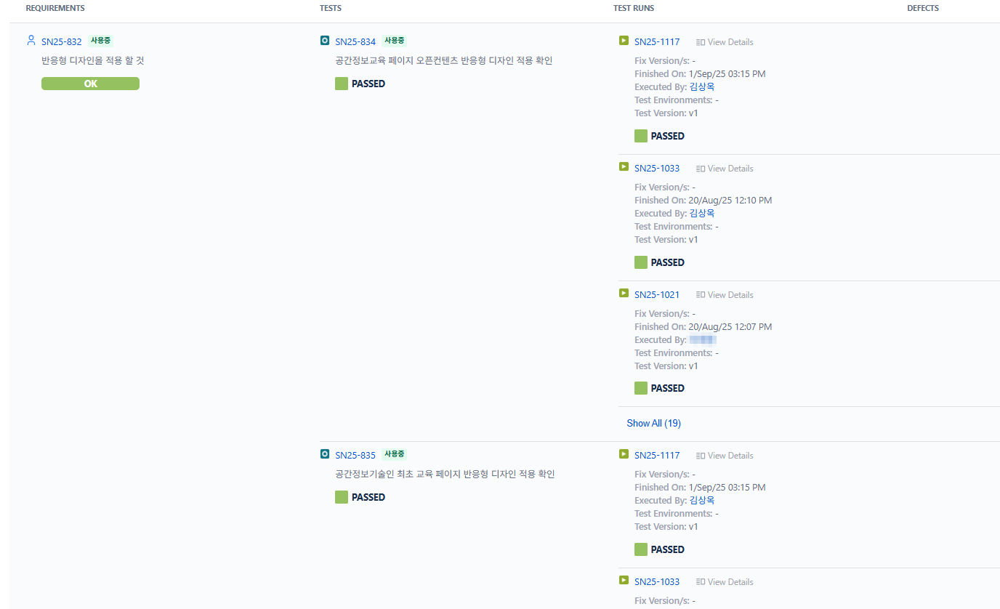
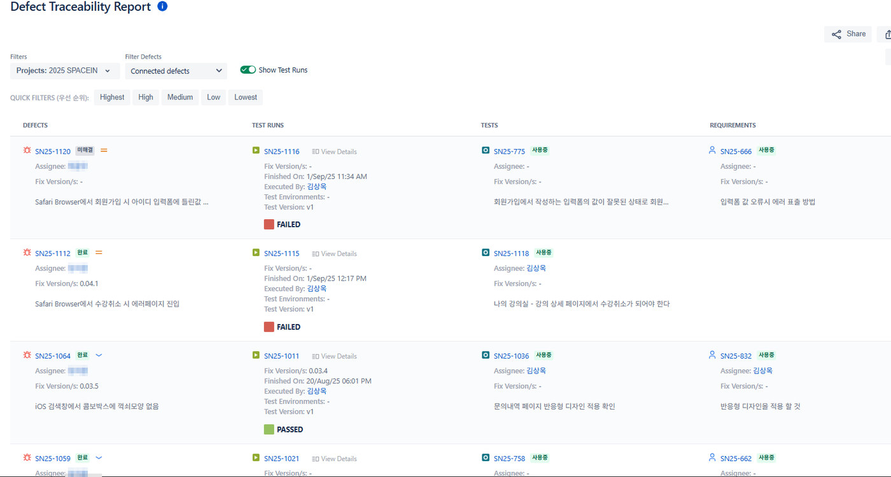
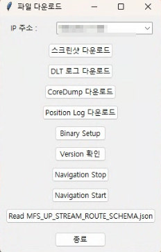

UI를 거치지 않고 API를 직접 두드려 프론트만 막고 있던 유효성 검증과 XSS 경로를 찾아낸 사례, 요구사항–TC–결함 추적성 체계, 반복 업무를 줄이려고 만든 도구들입니다.
UI에서 막히는 값이 서버에서도 막히는지는 확인되지 않았고, 요구사항–TC–결함이 따로 놀았습니다.
API 레벨로 내려가 검증하고, 추적성 체계를 세우고, 반복은 도구로 줄였습니다.
서버 측 검증 부재와 XSS 경로를 발견해 개선 주도, 요구사항 커버리지와 결함 추적성 확보.
프론트엔드 유효성 검증은 사용자에게 친절한 장치일 뿐 품질 보증이 아닙니다. 그래서 UI를 거치지 않고 REST API를 직접 호출해 같은 규칙이 서버에서도 지켜지는지 확인했습니다.

<script> 태그를 삽입해 전송요구사항과 TC의 연결로 추적성을 확보하고, 결함 관리 연동으로 양방향 추적이 가능합니다.



Python · paramiko · Tkinter
원격 서버에 SSH로 접속해 로그·스크린샷·CoreDump·Binary를 자동 수집하는 GUI 도구. 서비스 중단/재시작과 바이너리 배포까지 같은 창에서 처리합니다.
Python · re · threading
DLT 로그에서 KPI 이벤트를 정규식으로 파싱해 구간별 시간 차를 계산. 수작업 대비 검증 리소스 30% 절감에 기여했습니다.
Python · pandas · folium
GNSS 로그에서 좌표를 추출·검증해 CSV로 저장하고, 지도 위에 주행 경로를 폴리라인으로 시각화합니다.
Python · Tesseract OCR
클립보드 이미지·텍스트를 실시간 감지해 OCR + 번역. OCR 줄바꿈을 문장 종결 기준으로 병합하고 기술 문서용 명사형 종결로 자동 변환합니다.
Google Apps Script × Slack
“매달 잊지 말고 공유해야 하는 링크”를 사람의 기억에서 시스템으로 옮겼습니다. 링크 누락 시 경고, 월말 사전 점검까지 포함 — 실패 케이스를 설계에 넣었습니다.
Python · Selenium · Tkinter
여러 Breakpoint에서 자동 로그인 후 페이지를 순회하며 스크린샷을 일괄 캡처. GitHub Releases로 실행 파일을 배포해 비개발자도 쓸 수 있게 했습니다.